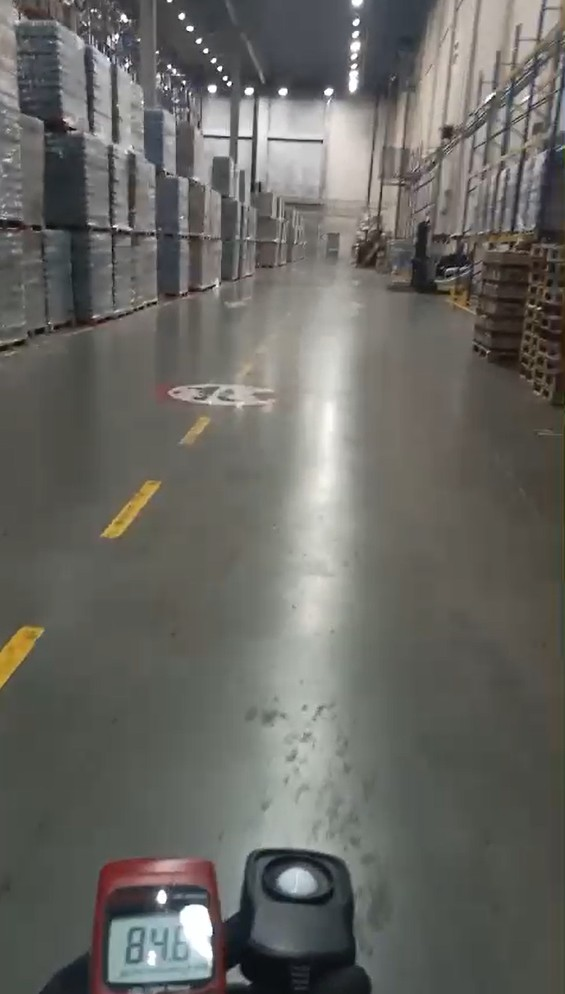
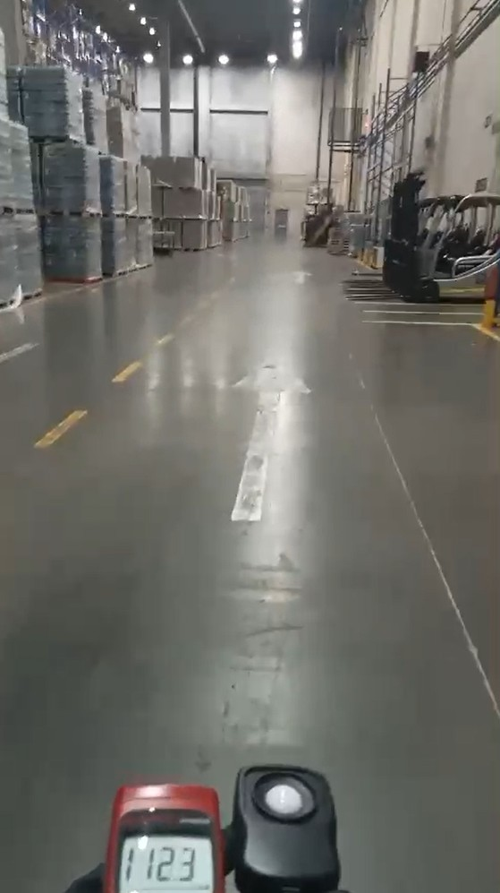
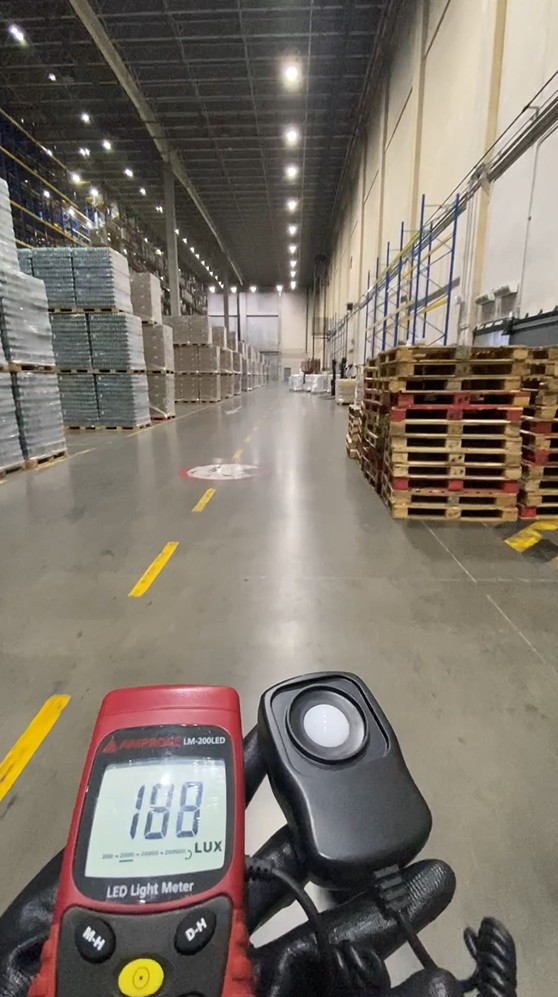
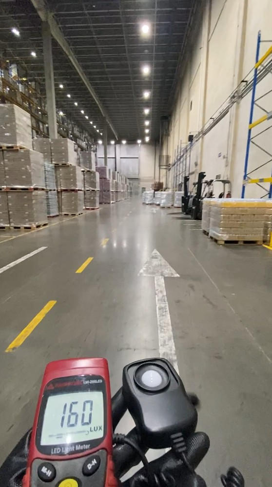

Este informe consolida los datos reales del medidor instalado durante la prueba piloto. Aquí encontrará el consumo registrado hora a hora, la comparación con la línea base anterior y el análisis del sistema de iluminación implementado.



